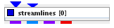

|
|
|

Creates streamlines of a vector field.
| input port | type | description | data acceptors |
|---|---|---|---|
| inField | VNField | Input vector field for streamlines | Field veclen=3 component Field veclen=2 component |
| startPoints | VNField | Input field for streamlines starting points | Field |
| output port | type | description | data schemas |
| streamlinesField | VNIrregularField | Output of streamlines field | |
| regularFlowField | VNRegularField | Output of regular flow field | |
| irregularFlowField | VNIrregularField | Output of irregular flow field | |
| outObj | VNGeometryObject | Output of geometry object for 3D streamlines |
Streamlines
The module integrates a vector field to produce streamlines.
Input data
The module requires a 3D field with at least one veclen=3 component. Optionally there is an input port for starting points for the streamlines.
Output data
At output there is a 3D irregular field of streamlines, a 3D geometry object of this field, and a flow field.
Computation parameters

If wait button is pressed processing is stopped. By default the button is not pressed and changes of parameters are processed immediately.
The vector component drop down list sets the input component with veclen=3 for which streamlines will be calculated. By default, the first component of the list is used.
The downsize menu in case of a regular field and and the downsize init points set menu in case of an irregular field reduces the size of the field, saving processing time and memory by "thinning out" the data. Default downsize values depend on the dimensions of the input field and are chosen automatically.
If dynamic button is pressed output is generated every time the downsize parameter changes. No down button cancels downsize. Default button adjusts the default values for downsize.
Integration step slider sets the integration step length for vector integration. Smaller steps are more accurate. If check box on the right hand side of the slider is on the user is able to change minimum, maximum and current value.
Steps range slider sets the number of integration steps which will be used to compute one streamline path. Point 0 is the initial point of the streamline.
Presentation parameters
Presentation parameters are described in the common interfaces section under the Presentation Panel entry.
Example
Choose test regular field 3D module from test objects library and regular field slice and streamlines modules from 3D field mappers library and connect them.
In the regular field slice UI choose axis k and slice number 49. In streamlines computation UI choose vector component vortex and downsize (8,8,1). In the presentation UI choose color component vector and a small enough line width.